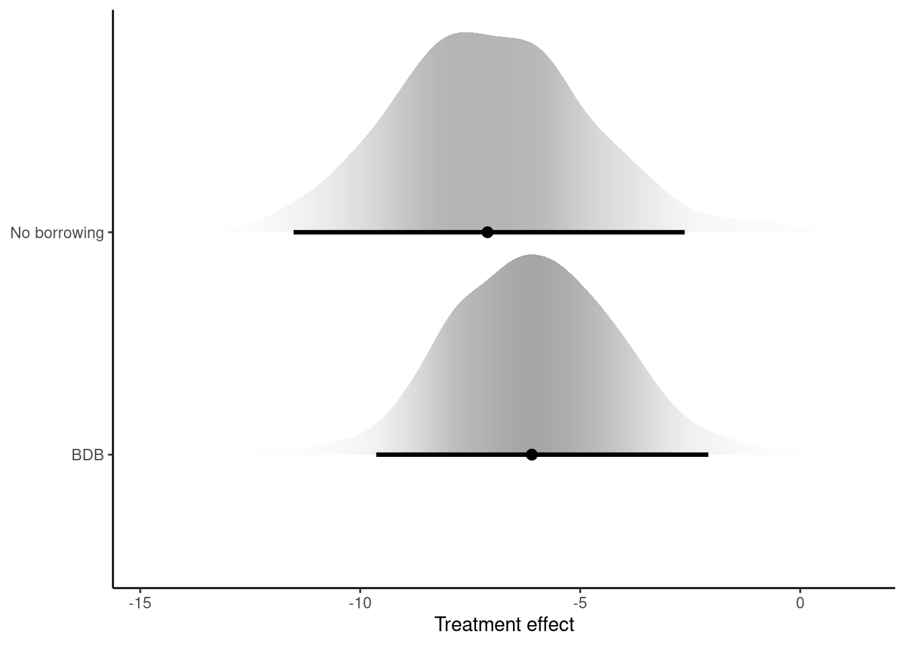
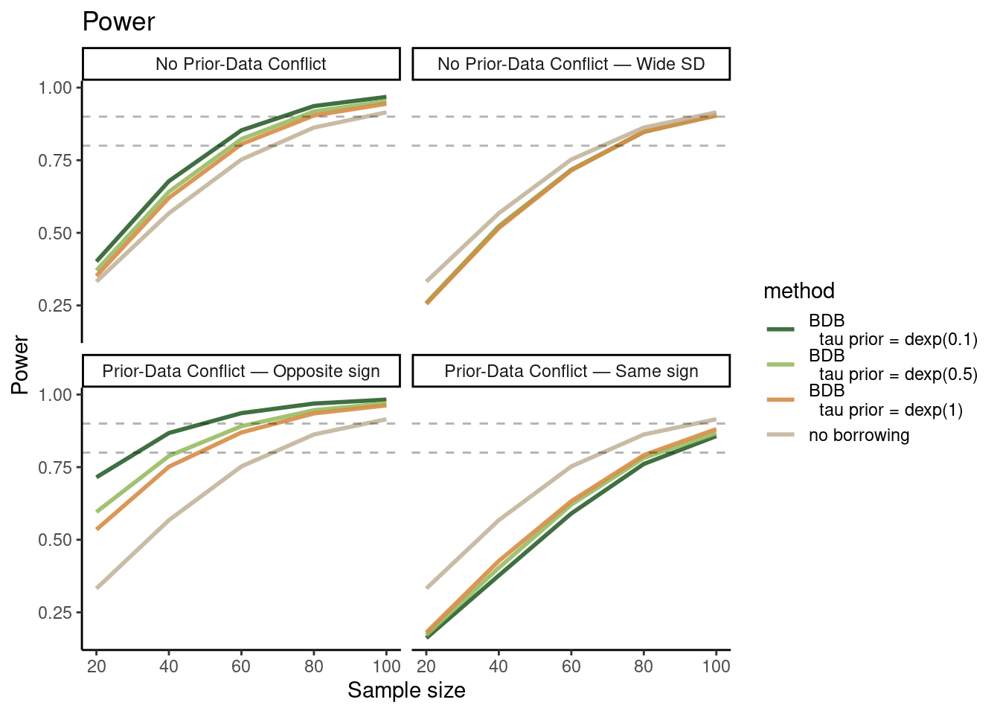
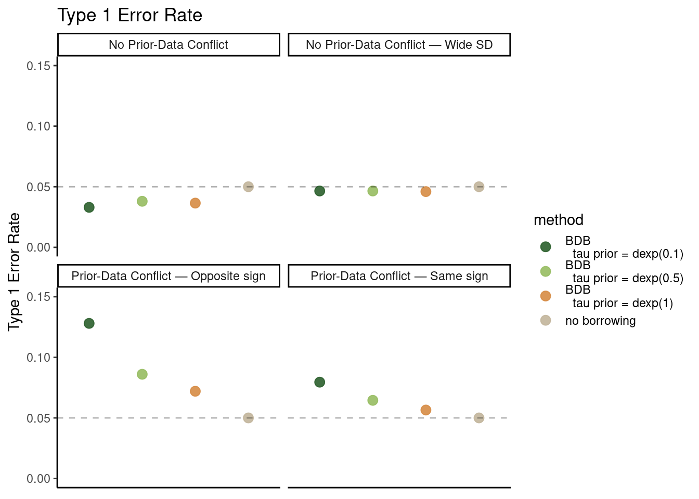

set.seed(42)
N_current <- 30 # current trial sample size
treatment <- rep(c(0,1), each=N_current/2) # 0=control, 1=treatment
# True effects
true_control_mean <- -1
true_treatment_effect <- -4
true_sd <- 6
# Simulate outcomes
y <- rnorm(N_current,
mean = true_control_mean + treatment*true_treatment_effect,
sd = true_sd)
# Create data list
data <- list(
y = y,
treatment = treatment,
N = N_current
)Being Bayesian in a Frequentist World
A Brief Introduction to Bayesian Dynamic Borrowing in R
Introduction
In this post, I’ll give a brief introduction to a Bayesian data analysis method known as “Bayesian dynamic borrowing” (BDB). BDB originated in biostatistics and in particular the clinical trials and drug development space.
In essence, BDB allows us to use informative priors, while letting the model figure out how much information to borrow from the prior. The model achieves this by estimating how similar the informative prior is to our current data.
This in turn has benefits on the operating characteristics of our analysis, such as balancing power gains with Type I error rates, something that drug regulatory agencies – as well as many parts of the scientific community writ large – care about. In that sense, BDB is a hybrid method, shoe-horning informative Bayesian inference into a frequentist framework. Put differently, it’s a way to be Bayesian in a frequentist world.
To follow along, I assume a basic familiarity with regression modeling and Bayesian statistics as well as with the R programming language (R Core Team 2024).
Now, there are many different approaches to BDB – for one overview, see Alt et al. (2025). We’re going to work with the so-called “commensurability parameter” approach following Hobbs et al. (2011).
We need some data
First, we’ll need some data to work with. We’ll simulate data from a simple hypothetical randomized trial with \(N = 30\). For instance, we can imagine that this is an early-phase experimental weight management drug trial with an active group receiving the treatment and a control group receiving placebo. The outcome y is then percentage weight change since baseline, which we take to be normally distributed with some standard deviation (true_sd). We take the mean weight change in the control group to be -1% (it’s common to see a small mean weight loss even in the control group in these kinds of trials) and the treatment effect to be -4%.
A simple Bayesian model
Now, to build up toward implementing BDB, let’s first fit a simple Bayesian linear regression model to these data.
\[\begin{aligned} y_i &\sim \text{Normal}(\mu_i, \sigma) \\ \mu_i &= \alpha + \beta x_i\\ \alpha &\sim \text{Normal}(0, 5) \\ \beta &\sim \text{Normal}(0, 5) \\ \sigma &\sim \text{Exponential}(0.5) \end{aligned}\]We model percentage weight change from baseline \(y_i\) using a normal distribution with mean \(\mu\) and standard deviation \(\sigma\). We model \(\mu\) with a regression equation consisting of two terms: an intercept \(\alpha\) and a slope \(\beta\). These represent the mean % weight change in the control group (when \(x_i = 0\)) and the treatment effect (when \(x_i = 1\)), respectively. The priors for \(\alpha\), \(\beta\) and \(\sigma\) are weakly informative.
To fit this model, we’ll use the rethinking package (McElreath 2020), an interface to Stan (Carpenter et al. 2017), primarily because it’s a useful pedagogical tool. Contrary to other popular Bayesian packages, rethinking forces the user to be explicit about the model structure and prior distributions. In our actual day-to-day work, we might want to use the more convenient packages out there, but for learning (and teaching), the rethinking package is really unrivaled.
The rethinking package is also much more flexible. For instance, to my knowledge, you couldn’t fit a BDB model in popular Bayesian R software like brms (Bürkner 2017) and rstanarm (Goodrich et al. 2024), at least not without some custom coding. There are, however, dedicated BDB packages out there which one could graduate to – see e.g., Alt et al. (2025), Secrest and Gravestock (2025), and Weber et al. (2021).
Let me show what I mean. Here’s our Bayesian linear regression model as implemented in rethinking syntax.
library(rethinking)
model_noborrow <- ulam(
alist(
y ~ normal(mu, sigma),
mu <- a + treatment*beta_trt,
a ~ normal(0, 5),
beta_trt ~ normal(0, 5),
sigma ~ exponential(0.5)
),
data = data,
chains = 4,
cores = 4,
iter = 1000
)The key bit is the content in alist(). We see that it corresponds very closely to the formal model just above. The remaining bits are the data and some Markov Chain Monte Carlo (MCMC) settings that we won’t go into details with here – see e.g. McElreath (2020) and Gelman et al. (2013).
Bayesian dynamic borrowing model
Let’s now imagine that we had historical data that we’d like to let inform our current trial analysis, for instance to increase power to detect a true effect – which in turn can help reduce sample size, cut costs, and shorten the duration of the trial. These data could come from a previous trial with a similar study population or from a meta-analysis of several trials. This prior information could also be elicited from domain experts.
I’m going to imagine that we have summary statistics from historical data on the control group that resembles in all relevant ways the control group in our current trial. Generally speaking, it’s the case that control group data is easier to come by, since different interventions (e.g., a new drug) may be tested against similar controls, whereas data on the specific intervention in question is more rare – after all, there’s a reason why we’re running the present study. That said, BDB can absolutely be used with historical treatment effect data, given data availability.
Similarly, I’ll illustrate BDB with the use of summary statistics from historical data, since summary statistics is also more widely available than individual-level data. But bear in mind that many BDB approaches can be used with (or even require) individual-level data.
For the sake of illustration, let’s imagine that the historical data on the control group, \(\alpha_h\), has a mean identical to the true control mean of our current data and a standard deviation, \(\sigma_h\), of 1. We add these values to our data list.
hist_control_mean <- true_control_mean # no conflict btw. historical and current data
hist_control_sd <- 1
data <- list(
y = y,
treatment = treatment,
N = N_current,
# add summary stats from historical data to data list
hist_control_mean = hist_control_mean,
hist_control_sd = hist_control_sd
)We’ll then modify our statistical model – I’ve highlighted the new bits.
\[\begin{aligned} \textcolor{grey}{y_i} &{\; \textcolor{grey}{\sim}\; } \textcolor{grey}{\text{Normal}(\mu_i, \sigma)} \\ \textcolor{grey}{\mu_i} &{\; \textcolor{grey}{=}\; } \textcolor{grey}{\alpha + \beta x_i} \\ \textcolor{black}{\alpha} &{\; \textcolor{black}{\sim}\; } \textcolor{black}{\text{Normal}(\alpha_h, \sqrt{\sigma_h^2 + \frac{1}{\tau}})} \\ \textcolor{grey}{\beta} &{\; \textcolor{grey}{\sim}\; } \textcolor{grey}{\text{Normal}(0, 5)} \\ \textcolor{grey}{\sigma} &{\; \textcolor{grey}{\sim}\; } \textcolor{grey}{\text{Exponential}(0.5)} \\ \textcolor{black}{\tau} &{\; \textcolor{black}{\sim}\; } \textcolor{black}{\text{Exponential}(1)} \end{aligned}\]First, let’s look at the new prior on \(\alpha\). The prior is now centered on \(\alpha_h\), the mean derived from the historical control group data, instead of on 0.
But here’s the really cool bit. The standard deviation of the prior for \(\alpha\) is now expressed as \(\sqrt{\sigma_h^2 + \frac{1}{\tau}}\). Let’s break it down. First, the term \(\sigma_h^2\) is just the variance of the historical data.
The second part of the standard deviation, \(\frac{1}{\tau}\), reflects an extra layer of uncertainty in the prior that the model is free to adjust. It ensures that we don’t over-rely on historical data when it appears inconsistent with the current data. This is what makes dynamic borrowing dynamic. In a sense, we get two chances to get things right:
If the historical data aligns well with what we’re seeing in the current trial, the so-called “commensurability parameter” \(\tau\) will tend toward larger values, which reduces the prior variance. This gives \(\alpha_h\) more weight in influencing \(\alpha\), leading to greater borrowing of information. However, when there’s conflict between the historical data and the current trial data, the model can increase \(\frac{1}{\tau}\), effectively inflating the prior variance to down-weight the contribution of the historical data. This is a useful property, because it guards against borrowing too much information from an inappropriate prior.
We can think of \(\tau\) in terms of shrinkage in a multilevel model, in that it controls the degree to which an estimate is “shrunk” toward a shared prior distribution, informed in this case by the historical data. Just as in a multilevel model, where shrinkage is guided by the variance of group-level parameters (with small variances pulling estimates closer to the group mean and large variances giving more freedom to individual group estimates), \(\tau\) plays a similar role by dynamically adjusting the amount of borrowing from historical data.
And of course, \(\tau\) needs a prior, too. The exponential distribution ensures that \(\tau\) is positive, which is necessary since it’s formally a precision parameter. We’ve just set the rate of the distribution to 0.5 as a starting point, but since \(\tau\) dictates the amount of borrowing, it’s a parameter that we — in a real analysis — need to play around with, for instance through sensitivity analysis (i.e., trying out different priors to make sure results are not inappropriately sensitive to our prior for \(\tau\)).
Here’s how our BDB model could look in rethinking. Again, the syntax satisfyingly mimics the formal model – we can more or less simply program in the new priors for \(\alpha\) and \(\tau\).
model_bdb <- ulam(
alist(
y ~ normal(mu, sigma),
mu <- a + treatment*beta_trt,
# new prior for alpha
a ~ normal(hist_control_mean, sqrt(hist_control_sd^2 + 1/tau)),
beta_trt ~ normal(0, 5),
sigma ~ exponential(0.5),
# tau parameter
tau ~ exponential(0.5)
),
data = data,
chains = 4,
cores = 4,
iter = 1000
)Compare models
Even though we’ve borrowed historical data for the control group, it’s ultimately the treatment effect we’re interested in. So let’s compare the posterior treatment effect estimates from the model with no borrowing against that of the BDB model.
Show the code
library(ggplot2)
library(tidybayes)
post_noborrow <- extract.samples(model_noborrow)
post_bdb <- extract.samples(model_bdb)
# Create a data frame combining both posteriors
plot_data <- data.frame(
beta_trt = c(post_noborrow$beta_trt, post_bdb$beta_trt),
model = rep(c("No borrowing", "BDB"),
c(length(post_noborrow$beta_trt), length(post_bdb$beta_trt)))
)
# Plot!
ggplot(plot_data, aes(y = model, x = beta_trt, slab_alpha = stat(f))) +
stat_halfeye(
.width = 0.95,
point_interval = "median_hdi",
normalize = "groups",
show.legend = FALSE,
) +
labs(
x = "Treatment effect",
y = NULL
) +
theme_classic() 
We see that the treatment effect estimate from the BDB model is indeed more precise than that of the no-borrowing model – although it’s hard to tell how much this increase in precision matters in practice. We turn to this question next.
Simulation results
To build some intuition for BDB, I’ve run a small simulation to see what happens under different scenarios. We explore statistical power and Type I error rate under four scenarios and a range of sample sizes:
“No prior-data conflict”: This is similar to above, where the mean of the historical control equals that of the control group of the current trial.
“Prior-data conflict, same sign”: The mean of the historical control is in conflict with – but has the same sign as – the control group and treatment effect of the current trial.
“Prior-data conflict, opposite sign”: The mean of the historical control is in conflict with – and has the opposite sign as – the control group and treatment effect of the current trial.
“No prior-data conflict, wide SD”: The mean of the historical control equals that of the control group of the current trial but the historical standard deviation is 5 times wider than in the example above.
We also vary the prior for \(\tau\) to assess how sensitive the operating characteristics are to various prior exponential rates (0.1, 0.5, 1). For each combination of scenario, sample size, and \(\tau\) prior, we run 2000 simulations.
While power and Type I errors are frequentist concepts, we can approximate them in a Bayesian framework.
For power, we can define a result as “significant” if the 95% quantile interval for the posterior distribution of the treatment effect excludes zero. We then calculate power as the proportion of simulations where the treatment effect is significant.
We approximate the Type I error rate by simulating datasets under the null, where the true treatment effect is zero. For each dataset, we fit the models and check whether the 95% quantile interval for the treatment effect excludes zero. The Type I error rate is then calculated as the proportion of these null simulations where the result is significant.
Show the code
library(rstan)
library(dplyr)
#######################################
### Prepare treatment effect inputs ###
#######################################
# To avoid re-compiling the models on each simulation iteration
## First, compile the base models once with "dummy" data
set.seed(42)
n_dummy <- 20
### Dynamic borrowing model
base_model_dynamic_func <- function(tau_prior) {
fit <- ulam(
alist(
y ~ dnorm(mu, sigma),
mu <- a + treatment*beta_trt,
a ~ dnorm(hist_control_mean, sqrt(hist_control_sd^2 + 1/tau)),
beta_trt ~ dnorm(0, 5),
sigma ~ dexp(0.5),
tau ~ dexp(tau_prior)
),
data = list(
y = rnorm(n_dummy), # dummy data for initial compilation
treatment = rep(c(0,1), each = n_dummy/2),
N = n_dummy,
hist_control_mean = 0,
hist_control_sd = 1,
tau_prior = tau_prior
),
cores = 4,
chains = 4,
iter = 1000,
message = FALSE,
refresh = 0
)
return(fit)
}
base_model_dynamic <- base_model_dynamic_func(tau_prior = 0.5)
### No borrowing model
base_model_noborrow <- ulam(
alist(
y ~ dnorm(mu, sigma),
mu <- a + treatment*beta_trt,
a ~ dnorm(0, 5),
beta_trt ~ dnorm(0, 5),
sigma ~ dexp(1)
),
data = list(
y = rnorm(n_dummy), # dummy data for initial compilation
treatment = rep(c(0,1), each = n_dummy/2),
N = n_dummy
),
cores = 4,
chains = 4,
iter = 1000,
message = FALSE,
refresh = 0
)
## Next, build the Stan models
### Get the Stan code from the compiled models
dynamic_code <- base_model_dynamic@model
noborrow_code <- base_model_noborrow@model
### Replace dimensions with the variable N to allow varying sample sizes
dynamic_code_flexible <- gsub("array\\[20\\]", "array[N]", dynamic_code)
dynamic_code_flexible <- gsub("vector\\[20\\]", "vector[N]", dynamic_code_flexible)
dynamic_code_flexible <- gsub("1:20", "1:N", dynamic_code_flexible)
noborrow_code_flexible <- gsub("array\\[20\\]", "array[N]", noborrow_code)
noborrow_code_flexible <- gsub("vector\\[20\\]", "vector[N]", noborrow_code_flexible)
noborrow_code_flexible <- gsub("1:20", "1:N", noborrow_code_flexible)
### Compile the models
dynamic_model <- stan_model(model_code = dynamic_code_flexible)
noborrow_model <- stan_model(model_code = noborrow_code_flexible)
### Function to simulate datasets
simulate_data <- function(N_current,
true_control_mean,
true_treatment_effect,
true_sd,
seed = NULL) {
if (!is.null(seed)) set.seed(seed)
# Generate data
treatment <- rep(c(0,1), each=N_current/2)
y <- rnorm(N_current,
mean = true_control_mean + treatment*true_treatment_effect,
sd = true_sd)
return(list(
y = y,
treatment = treatment
))
}
### Function to fit no-borrowing model
fit_noborrow <- function(data, base_model_noborrow) {
# Create data list for no-borrow model
data_noborrow <- list(
y = data$y,
treatment = data$treatment,
N = length(data$y)
)
# Fit no borrow model
fit_noborrow <- sampling(noborrow_model,
data = data_noborrow,
chains = 4,
iter = 2000,
refresh = 0)
# Extract posterior samples
noborrow_post <- extract.samples(fit_noborrow)
# Extract posterior means
noborrow_intercept_mean <- mean(noborrow_post$a)
noborrow_treatment_mean <- mean(noborrow_post$beta_trt)
# Calculate significance
noborrow_sig <- quantile(noborrow_post$beta_trt, c(0.025, 0.975))
return(list(
significant = (noborrow_sig[1] > 0 & noborrow_sig[2] > 0) |
(noborrow_sig[1] < 0 & noborrow_sig[2] < 0),
intercept_mean = noborrow_intercept_mean,
treatment_mean = noborrow_treatment_mean
))
}
### Function to fit dynamic model
fit_dynamic <- function(data,
hist_control_mean,
hist_control_sd,
base_model_dynamic,
tau_prior) {
# Create data list for dynamic model
data_dynamic <- list(
y = data$y,
treatment = data$treatment,
N = length(data$y),
hist_control_mean = hist_control_mean,
hist_control_sd = hist_control_sd,
tau_prior = tau_prior
)
# Fit dynamic model
fit_dynamic <- sampling(dynamic_model,
data = data_dynamic,
chains = 4,
iter = 2000,
refresh = 0)
# Extract posterior samples
dynamic_post <- extract.samples(fit_dynamic)
# Extract posterior means
dynamic_intercept_mean <- mean(dynamic_post$a)
dynamic_treatment_mean <- mean(dynamic_post$beta_trt)
# Calculate borrowing metrics
mean_tau <- mean(dynamic_post$tau)
# Calculate significance
dynamic_sig <- quantile(dynamic_post$beta_trt, c(0.025, 0.975))
return(list(
significant = (dynamic_sig[1] > 0 & dynamic_sig[2] > 0) |
(dynamic_sig[1] < 0 & dynamic_sig[2] < 0),
mean_tau = mean_tau,
intercept_mean = dynamic_intercept_mean,
treatment_mean = dynamic_treatment_mean
))
}
# Function to run simulation study
run_scenario_simulations <- function(sample_sizes, tau_priors, scenario_params, reuse_noborrow = FALSE, stored_noborrow = NULL) {
results <- list()
for(n in sample_sizes) {
cat(sprintf("\nSample size: %d\n", n))
# Generate all datasets for this sample size first
simulated_datasets <- vector("list", n_sims)
for(i in 1:n_sims) {
simulated_datasets[[i]] <- simulate_data(
N_current = n,
true_control_mean = scenario_params$true_control_mean,
true_treatment_effect = scenario_params$true_treatment_effect,
true_sd = scenario_params$true_sd,
seed = i
)
}
# Fit no-borrowing model if needed
if (!reuse_noborrow) {
noborrow_results_i <- vector("list", n_sims)
for(i in 1:n_sims) {
noborrow_results_i[[i]] <- fit_noborrow(
data = simulated_datasets[[i]],
base_model_noborrow = base_model_noborrow
)
cat(sprintf("\rNo-borrowing Progress: %d/%d simulations completed", i, n_sims))
}
cat("\n")
} else {
noborrow_results_i <- stored_noborrow[[as.character(n)]]
}
# For each tau prior, fit dynamic model using the same datasets
for(tau in tau_priors) {
cat(sprintf(" Tau prior: %.1f\n", tau))
dynamic_results_i <- vector("list", n_sims)
for(i in 1:n_sims) {
dynamic_results_i[[i]] <- fit_dynamic(
data = simulated_datasets[[i]],
hist_control_mean = scenario_params$hist_control_mean,
hist_control_sd = scenario_params$hist_control_sd,
base_model_dynamic = base_model_dynamic,
tau_prior = tau
)
# Store results
results[[length(results) + 1]] <- list(
dynamic = dynamic_results_i[[i]],
noborrow = noborrow_results_i[[i]],
sample_size = n,
tau_prior = tau
)
cat(sprintf("\rDynamic Progress: %d/%d simulations completed", i, n_sims))
}
cat("\n")
}
}
return(results)
}
#######################
### Run simulations ###
#######################
# Simulation settings
n_sims <- 2e3
sample_sizes = c(20, 40, 60, 80, 100)
tau_priors = c(0.1, 0.5, 1)
# Define scenario parameters
true_control_mean = -1
hist_control_mean = true_control_mean # no conflict
hist_control_sd = 1
true_treatment_effect = -4
true_sd = 6
print("If you updated the simulation parameters, did you also remember to update the prior in the model code?")
# List of scenarios
scenarios_params <- list(
null_noconflict = list(
true_control_mean = true_control_mean,
true_treatment_effect = 0, # null hypothesis
hist_control_mean = hist_control_mean, # no prior-data conflict
hist_control_sd = hist_control_sd,
true_sd = true_sd
),
noconflict = list(
true_control_mean = true_control_mean,
true_treatment_effect = true_treatment_effect, # power
hist_control_mean = hist_control_mean, # no prior-data conflict
hist_control_sd = hist_control_sd,
true_sd = true_sd
),
null_conflict_oppsign = list(
true_control_mean = true_control_mean,
true_treatment_effect = 0, # null hypothesis
hist_control_mean = abs(hist_control_mean) + 1, # prior-data conflict
hist_control_sd = hist_control_sd,
true_sd = true_sd
),
conflict_oppsign = list(
true_control_mean = true_control_mean,
true_treatment_effect = true_treatment_effect, # power
hist_control_mean = abs(hist_control_mean) + 1, # prior-data conflict
hist_control_sd = hist_control_sd,
true_sd = true_sd
),
null_conflict_samesign = list(
true_control_mean = true_control_mean,
true_treatment_effect = 0, # null hypothesis
hist_control_mean = hist_control_mean - 2, # prior-data conflict
hist_control_sd = hist_control_sd,
true_sd = true_sd
),
conflict_samesign = list(
true_control_mean = true_control_mean,
true_treatment_effect = true_treatment_effect, # power
hist_control_mean = hist_control_mean - 2, # prior-data conflict
hist_control_sd = hist_control_sd,
true_sd = true_sd
),
null_noConflict_wideSE = list(
true_control_mean = true_control_mean,
true_treatment_effect = 0, # null hypothesis
hist_control_mean = hist_control_mean, # no prior-data conflict
hist_control_sd = hist_control_sd * 5, # wider historical data SE
true_sd = true_sd
),
noConflict_wideSE = list(
true_control_mean = true_control_mean,
true_treatment_effect = true_treatment_effect, # power
hist_control_mean = hist_control_mean, # no prior-data conflict
hist_control_sd = hist_control_sd * 5, # wider historical data SE
true_sd = true_sd
)
)
# Run all scenarios
stored_noborrow <- list()
scenarios <- list()
for (scenario_name in names(scenarios_params)) {
cat(sprintf("\nRunning %s simulations...\n", scenario_name))
# Choose sample sizes based on scenario type
# Unblock to only run with one sample size for the null scenarios
# current_sample_sizes <- if(grepl("null", scenario_name)) c(20) else sample_sizes
# Determine if we can reuse no-borrowing results
scenario_type <- if(grepl("null", scenario_name)) "null" else "power"
sample_size_key <- paste(scenario_type, "n", sep="_")
# Run simulations with appropriate handling of no-borrowing results
if (!exists(sample_size_key, where = stored_noborrow)) {
# First time running this type of scenario (null or power)
scenario_results <- run_scenario_simulations(
sample_sizes,
tau_priors,
scenarios_params[[scenario_name]],
reuse_noborrow = FALSE
)
# Store no-borrowing results
stored_noborrow[[sample_size_key]] <- list()
for(n in sample_sizes) {
n_results <- scenario_results[sapply(scenario_results, function(x) x$sample_size == n)]
stored_noborrow[[sample_size_key]][[as.character(n)]] <-
lapply(n_results[1:n_sims], function(x) x$noborrow)
}
} else {
# Reuse existing no-borrowing results
scenario_results <- run_scenario_simulations(
sample_sizes,
tau_priors,
scenarios_params[[scenario_name]],
reuse_noborrow = TRUE,
stored_noborrow = stored_noborrow[[sample_size_key]]
)
}
scenarios[[scenario_name]] <- scenario_results
}
# Process results
results_list <- list()
for (scenario_name in names(scenarios)) {
scenario_results <- scenarios[[scenario_name]]
# First, group results by sample size and tau prior
sample_sizes <- unique(sapply(scenario_results, function(x) x$sample_size))
tau_priors <- unique(sapply(scenario_results, function(x) x$tau_prior))
# First process noborrow results
for(n in sample_sizes) {
# Get all results for this sample size
noborrow_results <- scenario_results[sapply(scenario_results, function(x)
x$sample_size == n)]
# Calculate means across simulations for noborrow
noborrow_significant <- mean(sapply(noborrow_results, function(x) x$noborrow$significant))
noborrow_intercept <- mean(sapply(noborrow_results, function(x) x$noborrow$intercept_mean))
noborrow_treatment <- mean(sapply(noborrow_results, function(x) x$noborrow$treatment_mean))
# Create data frame for noborrow results
noborrow_df <- data.frame(
scenario = scenario_name,
sample_size = n,
method = "no borrowing",
tau_prior = NA,
oc_estimate = noborrow_significant,
oc_type = ifelse(grepl("null", scenario_name), "type1", "power"),
mean_tau = NA,
intercept_estimate = noborrow_intercept,
treatment_estimate = noborrow_treatment
)
results_list[[length(results_list) + 1]] <- noborrow_df
}
# Then process dynamic results for all tau priors
for(n in sample_sizes) {
for(tau in tau_priors) {
# Get all results for this combination
dynamic_results <- scenario_results[sapply(scenario_results, function(x)
x$sample_size == n & x$tau_prior == tau)]
# Calculate means across simulations for dynamic
dynamic_significant <- mean(sapply(dynamic_results, function(x) x$dynamic$significant))
dynamic_mean_tau <- mean(sapply(dynamic_results, function(x) x$dynamic$mean_tau))
dynamic_intercept <- mean(sapply(dynamic_results, function(x) x$dynamic$intercept_mean))
dynamic_treatment <- mean(sapply(dynamic_results, function(x) x$dynamic$treatment_mean))
# Create data frame for dynamic results
dynamic_df <- data.frame(
scenario = scenario_name,
sample_size = n,
method = paste0("BDB\n tau prior = dexp(", tau, ")"),
tau_prior = tau,
oc_estimate = dynamic_significant,
oc_type = ifelse(grepl("null", scenario_name), "type1", "power"),
mean_tau = dynamic_mean_tau,
intercept_estimate = dynamic_intercept,
treatment_estimate = dynamic_treatment
)
results_list[[length(results_list) + 1]] <- dynamic_df
}
}
}
# Combine all results into one data frame
results_df <- do.call(rbind, results_list)
row.names(results_df) <- NULLLet’s plot results.
Show the code
library(dplyr)
colors <- c("#2C5F2D", "#97BC62", "#D68C45", "#C2B59B")
results_df$scenario <- factor(results_df$scenario,
levels = c("null_noconflict", "noconflict",
"null_noConflict_wideSE", "noConflict_wideSE",
"null_conflict_oppsign", "conflict_oppsign",
"null_conflict_samesign", "conflict_samesign"))
labs <- c("No Prior-Data Conflict", "Prior-Data Conflict — Opposite sign","Prior-Data Conflict — Same sign", "No Prior-Data Conflict — Wide SD")
## Power plot
labspwr <- labs
names(labspwr) <- unique(results_df %>% filter(oc_type == "power") %>% pull(scenario))
ggplot(results_df %>% filter(oc_type == "power"), aes(x = sample_size)) +
geom_line(aes(y = oc_estimate, color = method), linewidth = 1, alpha = 0.9) +
facet_wrap(~scenario, labeller = labeller(scenario = labspwr)) +
scale_color_manual(values = colors) +
geom_hline(yintercept = 0.8, linetype = "dashed", alpha = 0.3) +
geom_hline(yintercept = 0.9, linetype = "dashed", alpha = 0.3) +
ylab("Power") +
xlab("Sample size") +
theme_classic() +
ggtitle("Power")
Show the code
## Type 1 plot
labspval <- labs
names(labspval) <- unique(results_df %>% filter(oc_type == "type1") %>% pull(scenario))
ggplot(results_df %>% filter(oc_type == "type1" & sample_size == 100), aes(x = method)) +
geom_point(aes(y = oc_estimate, color = method), size = 3, alpha = 0.9) +
facet_wrap(~scenario, labeller = labeller(scenario = labspval)) +
scale_color_manual(values = colors) +
geom_hline(yintercept = 0.05, linetype = "dashed", alpha = 0.3) +
ylab("Type 1 Error Rate") +
xlab(NULL) +
theme_classic() +
theme(axis.text.x = element_blank(),
axis.ticks.x = element_blank()) +
ylim(c(0,0.15)) +
ggtitle("Type 1 Error Rate")
Take the upper-left panel first, where there’s no prior-data conflict. We see that BDB generally improves statistical power. For instance, under these particular conditions we reach a standard 90% power with a sample size of around 70-80 with the BDB models compared to just short of 100 for the model without borrowing – that is, a 20-30% reduction in sample size. The three BDB models have quite similar power, although the one with a higher mean prior on \(\tau\), exponential(0.1), has slightly more power due to higher degree of borrowing. Note too that we can reap these gains in power without paying a cost in terms of Type I error – all models in the middle panel have similar Type I error rates and if anything the model without borrowing performs worst.
In the bottom-left panel, where we have prior-data conflict with the opposite sign as the true control mean, we see a similar picture for power: BDB models have higher power than the model without borrowing. But it’s more pronounced here. A likely explanation is that the influence of the historical data creates greater contrast between the estimated treatment and control groups, making the treatment effect easier to discern – while the dynamic borrowing models adaptively discount the historical data under conflict, it allows partial borrowing to still provide some information. However, this comes at the cost of inflated Type I error rates, where all BDB models are above the nominal threshold of 0.05. Whether the higher Type I error rates are acceptable given the substantial power gains can only be evaluated on a case by case basis. For instance, there are probably cases where it’s too expensive to miss a true effect, such that we’re willing to increase slightly the chance of a false positive to reduce the chance of a false negative.
In the bottom-right panel, where we have prior-data conflict with the same sign as the true control mean, the BDB models have less power than the model without borrowing. Following the same logic as with the opposite sign conflict scenario, this is because the borrowing process pulls the control group estimate toward the historical data, which shares the same sign but differs in magnitude. This effectively dilutes the contrast between the treatment and control groups. The Type I error rates in this scenario are inflated across all BDB models, though the inflation is less severe compared to the opposite sign conflict scenario. Both conflict scenarios, then, highlight the importance of identifying appropriate historical data sources for BDB to shine.
Finally, for the upper-right panel, where we have a wider standard deviation for the historical control data but no prior-data conflict, we see that the BDB models have similar power and Type I error rates to that of the model without borrowing. This is because the wider standard deviation in the historical control data weakens the influence of borrowing, which in turn reduces the impact of the prior on the posterior estimates. As a result, the dynamic borrowing models rely more heavily on the current data, making their behavior closer to that of the no-borrowing model.
Summary
This post introduced Bayesian Dynamic Borrowing using R and the rethinking package. As we’ve seen, BDB allows us to use informative priors, while letting the model figure out how much information to borrow from the prior. Given relevant prior information, BDB can help reduce sample size and costs of a trial as well as shorten study timelines. It’s particularly useful when study participants are hard to come by, for instance in rare diseases, pediatric populations, and regional studies.
To build intuition for BDB, we also ran a small simulation. This could be expanded in a number of ways, for instance by adding more scenarios and making it more computationally efficient. And of course, there’s also much more to BDB than we’ve covered here. For instance, we haven’t considered how to appropriately select historical data sources, derive meta-analytic priors, use individual-level data rather than summary statistics, or how BDB models perform with more complex data or designs – interested readers could check out Weber et al. (2025) as well as Alt et al. (2025), Secrest and Gravestock (2025), and Weber et al. (2021). For further deep dives on BDB, some starting points include Best et al. (2021), Edwards et al. (2024), Kaplan et al. (2023), Hobbs et al. (2011), and Viele et al. (2014).
Personally, I find it intellectually – even philosophically – satisfying to actually make use of historical information whenever possible, aligning well with an ideal of science as a cumulative endeavor. As such, BDB paves a way to be Bayesian in a frequentist world.
References
Alt, Ethan M, Xinxin Chen, Luiz M Carvalho, and Joseph G Ibrahim. 2025. “Hdbayes: An r Package for Bayesian Analysis of Generalized Linear Models Using Historical Data.” arXiv Preprint arXiv:2506.20060.
Best, Nicky, Robert G Price, Isabelle J Pouliquen, and Oliver N Keene. 2021. “Assessing Efficacy in Important Subgroups in Confirmatory Trials: An Example Using Bayesian Dynamic Borrowing.” Pharmaceutical Statistics 20 (3): 551–62.
Bürkner, Paul-Christian. 2017. “Brms: An r Package for Bayesian Multilevel Models Using Stan.” Journal of Statistical Software 80: 1–28.
Carpenter, Bob, Andrew Gelman, Matthew D Hoffman, Daniel Lee, Ben Goodrich, Michael Betancourt, Marcus Brubaker, Jiqiang Guo, Peter Li, and Allen Riddell. 2017. “Stan: A Probabilistic Programming Language.” Journal of Statistical Software 76: 1–32.
Edwards, Dawn, N Best, J Crawford, L Zi, C Shelton, and A Fowler. 2024. “Using Bayesian Dynamic Borrowing to Maximize the Use of Existing Data: A Case-Study.” Therapeutic Innovation & Regulatory Science 58 (1): 1–10.
Gelman, Andrew, John B Carlin, Dunson Stern Hal S, and Donald B Rubin. 2013. Bayesian Data Analysis. 3rd ed. Chapman; Hall/CRC.
Goodrich, Ben, Jonah Gabry, Imad Ali, and Sam Brilleman. 2024. “Rstanarm: Bayesian Applied Regression Modeling via Stan.” https://mc-stan.org/rstanarm/.
Hobbs, Brian P, Bradley P Carlin, Sumithra J Mandrekar, and Daniel J Sargent. 2011. “Hierarchical Commensurate and Power Prior Models for Adaptive Incorporation of Historical Information in Clinical Trials.” Biometrics 67 (3): 1047–56.
Kaplan, David, Jianshen Chen, Sinan Yavuz, and Weicong Lyu. 2023. “Bayesian Dynamic Borrowing of Historical Information with Applications to the Analysis of Large-Scale Assessments.” Psychometrika 88 (1): 1–30.
McElreath, Richard. 2020. Statistical Rethinking: A Bayesian Course with Examples in R and Stan. Second. CRC Press.
R Core Team. 2024. R: A Language and Environment for Statistical Computing. Vienna, Austria: R Foundation for Statistical Computing. https://www.R-project.org/.
Secrest, Matt, and Isaac Gravestock. 2025. Psborrow2: Bayesian Dynamic Borrowing Analysis and Simulation. https://github.com/Genentech/psborrow2.
Viele, Kert, Scott Berry, Beat Neuenschwander, Billy Amzal, Fang Chen, Nathan Enas, Brian Hobbs, et al. 2014. “Use of Historical Control Data for Assessing Treatment Effects in Clinical Trials.” Pharmaceutical Statistics 13 (1): 41–54.
Weber, Sebastian, Björn Holzhauer, Lukas Widmer, and Andrew Bean. 2025. Applied Modelling in Drug Development: Flexible Regression Modelling in Stan via Brms. https://opensource.nibr.com/bamdd/.
Weber, Sebastian, Yue Li, John W. Seaman, Tomoyuki Kakizume, and Heinz Schmidli. 2021. “Applying Meta-Analytic-Predictive Priors with the R Bayesian Evidence Synthesis Tools.” Journal of Statistical Software 100 (19): 1–32. https://doi.org/10.18637/jss.v100.i19.
Session info
sessionInfo()R version 4.4.1 (2024-06-14)
Platform: x86_64-pc-linux-gnu
Running under: Rocky Linux 8.10 (Green Obsidian)
Matrix products: default
BLAS/LAPACK: /usr/lib64/libopenblasp-r0.3.15.so; LAPACK version 3.9.0
locale:
[1] LC_CTYPE=en_US.UTF-8 LC_NUMERIC=C
[3] LC_TIME=en_US.UTF-8 LC_COLLATE=en_US.UTF-8
[5] LC_MONETARY=en_US.UTF-8 LC_MESSAGES=en_US.UTF-8
[7] LC_PAPER=en_US.UTF-8 LC_NAME=C
[9] LC_ADDRESS=C LC_TELEPHONE=C
[11] LC_MEASUREMENT=en_US.UTF-8 LC_IDENTIFICATION=C
time zone: Europe/Copenhagen
tzcode source: system (glibc)
attached base packages:
[1] parallel stats graphics grDevices utils datasets methods
[8] base
other attached packages:
[1] dplyr_1.1.4 tidybayes_3.0.6 ggplot2_3.5.1
[4] digest_0.6.36 rethinking_2.42 posterior_1.6.0
[7] cmdstanr_0.9.0.9000
loaded via a namespace (and not attached):
[1] gtable_0.3.5 shape_1.4.6.1 tensorA_0.36.2.1
[4] QuickJSR_1.3.1 xfun_0.46 htmlwidgets_1.6.4
[7] processx_3.8.4 inline_0.3.19 lattice_0.22-6
[10] vctrs_0.6.5 tools_4.4.1 ps_1.7.7
[13] generics_0.1.3 curl_5.2.1 stats4_4.4.1
[16] tibble_3.2.1 fansi_1.0.6 pkgconfig_2.0.3
[19] Matrix_1.7-0 data.table_1.15.4 checkmate_2.3.2
[22] assertthat_0.2.1 RcppParallel_5.1.8 distributional_0.4.0
[25] lifecycle_1.0.4 compiler_4.4.1 farver_2.1.2
[28] munsell_0.5.1 codetools_0.2-20 htmltools_0.5.8.1
[31] yaml_2.3.10 Formula_1.2-5 pillar_1.9.0
[34] tidyr_1.3.1 arrayhelpers_1.1-0 MASS_7.3-61
[37] StanHeaders_2.32.10 RBesT_1.7-3 abind_1.4-5
[40] rstan_2.32.6 tidyselect_1.2.1 svUnit_1.0.6
[43] mvtnorm_1.2-5 purrr_1.0.2 labeling_0.4.3
[46] fastmap_1.2.0 grid_4.4.1 colorspace_2.1-1
[49] cli_3.6.3 magrittr_2.0.3 loo_2.8.0
[52] pkgbuild_1.4.4 utf8_1.2.4 withr_3.0.1
[55] scales_1.3.0 backports_1.5.0 lubridate_1.9.3
[58] timechange_0.3.0 rmarkdown_2.27 matrixStats_1.3.0
[61] gridExtra_2.3 coda_0.19-4.1 evaluate_0.24.0
[64] knitr_1.48 V8_4.4.2 ggdist_3.3.2
[67] rstantools_2.4.0 rlang_1.1.4 Rcpp_1.0.13
[70] glue_1.7.0 rstudioapi_0.16.0 jsonlite_1.8.8
[73] R6_2.5.1